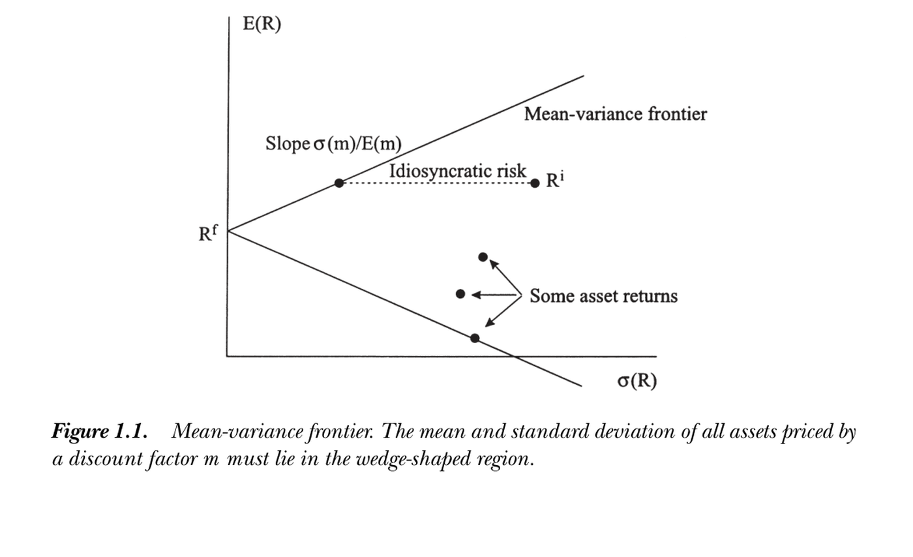

1. Consumption-Based Model and Overview
1. Consumption-Based Model and Overview
本章导读 本章来自 Cochrane《Asset Pricing》（修订版，2005）第 1 章——全书的总纲。核心思想：投资者"少消费一点今天、多买一点资产"的一阶条件给出最基本的定价方程 \(p_t=\mathbb E_t[\beta\frac{u'(c_{t+1})}{u'(c_t)}x_{t+1}]\)。§1.1 基本定价方程；§1.2 边际替代率 / 随机贴现因子 (SDF) \(m=\beta u'(c_{t+1})/u'(c_t)\)，\(p=\mathbb E(mx)\)；§1.3 价格、支付与记号（含 \(1=\mathbb E(mR)\)、超额收益、实际/名义）；§1.4 金融经典问题（无风险利率、风险修正、特质风险不定价、\(\mathbb E[R]\)-beta 表示、均值方差前沿、Sharpe 比上界与股权溢价之谜、随机游走与时变期望收益、现值公式）；§1.5 连续时间贴现因子。这是 Cochrane 文本（≠博客中 Xindi He 的同名讲义）。每章末附 Problems。
1. Consumption-Based Model and Overview
Overview This chapter is Chapter 1 of Cochrane's Asset Pricing (Revised Edition, 2005) — the overview of the whole book. Core idea: the investor's first-order condition for "consume a little less today and buy a little more of an asset" gives the most basic pricing equation \(p_t=\mathbb E_t[\beta\frac{u'(c_{t+1})}{u'(c_t)}x_{t+1}]\). §1.1 the basic pricing equation; §1.2 the marginal rate of substitution / stochastic discount factor (SDF) \(m=\beta u'(c_{t+1})/u'(c_t)\), \(p=\mathbb E(mx)\); §1.3 prices, payoffs, and notation (incl. \(1=\mathbb E(mR)\), excess returns, real/nominal); §1.4 classic issues in finance (the risk-free rate, risk corrections, idiosyncratic risk is not priced, the \(\mathbb E[R]\)-beta representation, the mean-variance frontier, the Sharpe-ratio bound and the equity premium puzzle, random walks and time-varying expected returns, the present-value formula); §1.5 discount factors in continuous time. This is the Cochrane text (≠ the Xindi He notes of the same name in the blog). Each chapter ends with Problems.
1.1 基本定价方程 / Basic Pricing Equation
1.1 Basic Pricing Equation
一阶条件给出基本定价方程 / The first-order condition gives the basic pricing equation 求时刻 \(t\) 处某支付 \(x_{t+1}\) 的价值。买股票则 \(x_{t+1}=p_{t+1}+d_{t+1}\)（注意：支付 \(x_{t+1}\) 不是收益或利润）。用定义在当前与未来消费上的效用建模投资者：\(U(c_t,c_{t+1})=u(c_t)+\beta\mathbb E_t[u(c_{t+1})]\)，常用幂效用 \(u(c_t)=\frac1{1-\gamma}c_t^{1-\gamma}\)（\(\gamma\to1\) 时 \(u(c)=\ln c\)）。\(u\) 递增（喜多消费）、凹（边际效用递减），\(\beta\) 是主观贴现因子（不耐心）。设原消费 \(e\)、买入资产数量 \(\xi\)，则Find the value at time \(t\) of a payoff \(x_{t+1}\). Buying a stock gives \(x_{t+1}=p_{t+1}+d_{t+1}\) (note: the payoff \(x_{t+1}\) is not the return or profit). Model the investor by a utility over current and future consumption: \(U(c_t,c_{t+1})=u(c_t)+\beta\mathbb E_t[u(c_{t+1})]\), with the common power utility \(u(c_t)=\frac1{1-\gamma}c_t^{1-\gamma}\) (\(u(c)=\ln c\) as \(\gamma\to1\)). \(u\) is increasing (more consumption is good) and concave (declining marginal value), and \(\beta\) is the subjective discount factor (impatience). With original consumption \(e\) and amount \(\xi\) of the asset bought,
$$\max_{\{\xi\}}\ u(c_t)+\mathbb E_t[\beta u(c_{t+1})]\quad\text{s.t.}\quad c_t=e_t-p_t\xi,\ c_{t+1}=e_{t+1}+x_{t+1}\xi.$$
代入约束、对 \(\xi\) 求导置零，得一阶条件Substituting the constraints and setting the derivative w.r.t. \(\xi\) to zero gives the first-order condition
$$p_t u'(c_t)=\mathbb E_t[\beta u'(c_{t+1})x_{t+1}],\tag{1.1}$$
即中心定价公式i.e. the central asset pricing formula
$$p_t=\mathbb E_t\left[\beta\frac{u'(c_{t+1})}{u'(c_t)}x_{t+1}\right].\tag{1.2}$$
(1.1) 是最优条件：\(p_t u'(c_t)\) 是多买一单位资产的效用损失，\(\mathbb E_t[\beta u'(c_{t+1})x_{t+1}]\) 是未来支付带来的（贴现期望）效用增益，买卖至两者相等。(1.2) 把内生的价格与另两个内生量（消费、支付）联系起来——全书理论几乎都是它的特化与变形。(1.1) is the optimality condition: \(p_t u'(c_t)\) is the utility loss from buying one more unit, \(\mathbb E_t[\beta u'(c_{t+1})x_{t+1}]\) is the (discounted, expected) utility gain from the future payoff, and the investor trades until they are equal. (1.2) relates the endogenous price to two other endogenous quantities (consumption and payoffs) — almost all of the book's theory is a specialization or manipulation of it.
1.2 边际替代率 / 随机贴现因子 / MRS / Stochastic Discount Factor
SDF 定义与 \(p=\mathbb E(mx)\) / The SDF and \(p=\mathbb E(mx)\) 定义随机贴现因子 (SDF)Define the stochastic discount factor (SDF)
$$m_{t+1}\equiv\beta\frac{u'(c_{t+1})}{u'(c_t)},\tag{1.3}$$
则基本公式 (1.2) 简记为so the basic formula (1.2) becomes simply
$$p_t=\mathbb E_t(m_{t+1}x_{t+1})\quad\Longrightarrow\quad p=\mathbb E(mx).\tag{1.4}$$
（不必显式写时间下标时简记为 \(p=\mathbb E(mx)\)。）\(m\) 推广了"贴现"：无不确定性时 \(p_t=\frac1{R^f}x_{t+1}\)（\(1/R^f\) 为贴现因子）；风险资产常用风险调整贴现率 \(p_t^i=\frac1{R^i}\mathbb E_t[x_{t+1}^i]\)。(1.4) 的深刻之处：用同一个 \(m\)（对所有资产相同）放进期望内，即可纳入所有风险修正——风险修正来自 \(m\) 与各资产支付 \(x^i\) 随机成分的相关性。\(m\) 又称边际替代率、定价核 (pricing kernel)、测度变换 / 状态价格密度。所有资产定价模型都只是把 \(m\) 与数据相连的不同方式——把模型拆成 \(p=\mathbb E(mx)\) 与"\(m\) 如何连数据"两部分，可避免每个模型重做全部推演。(When time subscripts are not needed, write simply \(p=\mathbb E(mx)\).) \(m\) generalizes "discounting": with no uncertainty \(p_t=\frac1{R^f}x_{t+1}\) (\(1/R^f\) the discount factor); risky assets are often valued with risk-adjusted discount rates \(p_t^i=\frac1{R^i}\mathbb E_t[x_{t+1}^i]\). The depth of (1.4): using one \(m\) (the same for every asset) inside the expectation incorporates all risk corrections — which arise from the correlation between the random parts of \(m\) and each asset's payoff \(x^i\). \(m\) is also the marginal rate of substitution, the pricing kernel, or a change of measure / state-price density. All asset pricing models are just different ways of connecting \(m\) to data — splitting models into \(p=\mathbb E(mx)\) and "how \(m\) connects to data" avoids redoing all the manipulations for each model.
1.3 价格、支付与记号 / Prices, Payoffs, and Notation
记号的普适性与收益 \(1=\mathbb E(mR)\) / The generality of the notation and \(1=\mathbb E(mR)\) \(p_t,x_{t+1}\) 的记号极其通用，涵盖：股票（\(p_t\)，\(p_{t+1}+d_{t+1}\)）、收益（\(1\)，\(R_{t+1}\)）、价格-红利比、超额收益（\(0\)，\(R^e=R^a-R^b\)）、管理组合（\(z_t\)，\(z_t R_{t+1}\)）、矩条件、一期债券（\(p_t\)，\(1\)）、无风险利率（\(1/R^f\)，\(1\)）、期权（\(C\)，\(\max(S_T-K,0)\)）。把支付除以价格得毛收益 \(R_{t+1}\equiv x_{t+1}/p_t\)（价格为 1 的支付），于是The notation \(p_t,x_{t+1}\) is extremely general, covering: stock (\(p_t\), \(p_{t+1}+d_{t+1}\)), return (\(1\), \(R_{t+1}\)), price-dividend ratio, excess return (\(0\), \(R^e=R^a-R^b\)), managed portfolio (\(z_t\), \(z_t R_{t+1}\)), moment condition, one-period bond (\(p_t\), \(1\)), risk-free rate (\(1/R^f\), \(1\)), option (\(C\), \(\max(S_T-K,0)\)). Dividing payoff by price gives the gross return \(R_{t+1}\equiv x_{t+1}/p_t\) (a payoff with price 1), so
$$1=\mathbb E(mR),$$
这是 \(p=\mathbb E(mx)\) 最重要的特例。大写 \(R\) 表毛收益（如 1.05），小写 \(r=R-1\) 或 \(r=\ln R\) 表净/对数收益（如 0.05）。零价格不等于零支付：借 1 元（利率 \(R^f\)）投入收益 \(R\) 的资产，今天不掏钱、未来得 \(R-R^f\)，这是价格为 0 的超额收益（零成本组合），不能除以价格化为收益。利率变动与风险溢价的理解关系不大，故常把利率与超额收益分开看。价格收益可实际（按商品计）或名义（按美元计）——只需用相应的实际或名义贴现因子。the most important special case of \(p=\mathbb E(mx)\). Capital \(R\) denotes gross returns (like 1.05); lowercase \(r=R-1\) or \(r=\ln R\) denotes net/log returns (like 0.05). Zero price does not mean zero payoff: borrowing USD 1 (at rate \(R^f\)) and investing in an asset with return \(R\) costs nothing today and pays \(R-R^f\), a zero-price excess return (zero-cost portfolio) that cannot be divided by price to form a return. Interest-rate variation has little to do with risk premia, so it is convenient to separate interest rates and excess returns. Prices/returns can be real (in goods) or nominal (in dollars) — just use the corresponding real or nominal discount factor.
1.4 金融经典问题 / Classic Issues in Finance
无风险利率 / Risk-Free Rate 无风险利率已知，故 \(1=\mathbb E(mR^f)=\mathbb E(m)R^f\)，即The risk-free rate is known ahead of time, so \(1=\mathbb E(mR^f)=\mathbb E(m)R^f\), i.e.
$$R^f=1/\mathbb E(m).\tag{1.6}$$
（无无风险证券时，可用 \(R^f=1/\mathbb E(m)\) 定义"影子"无风险利率 / 零-beta 率。）用幂效用 \(u'(c)=c^{-\gamma}\) 且无不确定性时 \(R^f=\frac1\beta(c_{t+1}/c_t)^\gamma\)：利率高当人不耐心（\(\beta\) 低）、消费增长高（跨期替代）；\(\gamma\) 大则利率对消费增长更敏感。设对数消费增长正态，则(With no risk-free security, \(R^f=1/\mathbb E(m)\) defines a "shadow" / zero-beta rate.) With power utility \(u'(c)=c^{-\gamma}\) and no uncertainty \(R^f=\frac1\beta(c_{t+1}/c_t)^\gamma\): rates are high when people are impatient (\(\beta\) low) or consumption growth is high (intertemporal substitution); large \(\gamma\) makes rates more sensitive to consumption growth. With lognormal consumption growth,
$$r^f_t=\delta+\gamma\mathbb E_t(\Delta\ln c_{t+1})-\frac{\gamma^2}2\sigma_t^2(\Delta\ln c_{t+1}),\tag{1.7}$$
其中 \(r^f_t=\ln R^f_t\)、\(\beta=e^{-\delta}\)。新增的 \(\sigma^2\) 项是预防性储蓄：消费越波动，人越想储蓄，压低利率。（推导用 \(\mathbb E[e^z]=e^{\mathbb E(z)+\frac12\sigma^2(z)}\)，正态情形。）where \(r^f_t=\ln R^f_t\), \(\beta=e^{-\delta}\). The new \(\sigma^2\) term is precautionary saving: more volatile consumption makes people save more, lowering rates. (Derived using \(\mathbb E[e^z]=e^{\mathbb E(z)+\frac12\sigma^2(z)}\) for normal \(z\).)
风险修正 / Risk Corrections 由 \(\mathrm{cov}(m,x)=\mathbb E(mx)-\mathbb E(m)\mathbb E(x)\)，把 \(p=\mathbb E(mx)\) 写成 \(p=\mathbb E(m)\mathbb E(x)+\mathrm{cov}(m,x)\) (1.8)，再代 (1.6)：Using \(\mathrm{cov}(m,x)=\mathbb E(mx)-\mathbb E(m)\mathbb E(x)\), write \(p=\mathbb E(mx)\) as \(p=\mathbb E(m)\mathbb E(x)+\mathrm{cov}(m,x)\) (1.8), then substitute (1.6):
$$p=\frac{\mathbb E(x)}{R^f}+\mathrm{cov}(m,x)=\frac{\mathbb E(x)}{R^f}+\frac{\mathrm{cov}(\beta u'(c_{t+1}),x_{t+1})}{u'(c_t)}.\tag{1.9, 1.10}$$
第一项是风险中性现值，第二项是风险调整。因 \(u'\) 随 \(c\) 递减：支付与消费正相关的资产价格被压低（它在你已富裕时支付高、已贫穷时支付低，使消费更波动，你只肯出低价）；与消费负相关者（如保险）更值钱（平滑消费）。对收益（\(1=\mathbb E(mR^i)\)）：The first term is the risk-neutral present value, the second a risk adjustment. Since \(u'\) falls in \(c\): an asset whose payoff is positively correlated with consumption has its price lowered (it pays well when you are already rich and badly when poor, making consumption more volatile, so you pay little); one negatively correlated (e.g. insurance) is more valuable (it smooths consumption). For returns (\(1=\mathbb E(mR^i)\)):
$$\mathbb E(R^i)-R^f=-R^f\,\mathrm{cov}(m,R^i)=-\frac{\mathrm{cov}(u'(c_{t+1}),R^i_{t+1})}{\mathbb E(u'(c_{t+1}))}.\tag{1.12, 1.13}$$
所有资产期望收益 = 无风险利率 + 风险调整。与消费正协变者须给更高期望收益；与消费负协变者（保险）可低于无风险利率甚至为负。Every asset's expected return = risk-free rate + a risk adjustment. Assets covarying positively with consumption must promise higher expected returns; those covarying negatively (insurance) can pay below the risk-free rate, even negative.
特质风险不影响价格 / Idiosyncratic risk is not priced 若支付与 \(m\) 不相关（\(\mathrm{cov}(m,x)=0\)），则 \(p=\mathbb E(x)/R^f\)，无论 \(\sigma^2(x)\) 多大、投资者多厌恶风险——因为多买一点对消费方差无一阶影响。只有系统性风险（与 \(m\) 相关的部分）才有风险修正。把支付回归分解 \(x=\mathrm{proj}(x\mid m)+\varepsilon\)，其中投影（无常数线性回归）\(\mathrm{proj}(x\mid m)=\frac{\mathbb E(mx)}{\mathbb E(m^2)}m\)；残差 \(\varepsilon\) 价格为 0（\(\mathbb E(m\varepsilon)=0\)），故 \(p(x)=p(\mathrm{proj}(x\mid m))\)——只有支付中与 \(m\) 完全相关的系统成分决定价格。If a payoff is uncorrelated with \(m\) (\(\mathrm{cov}(m,x)=0\)), then \(p=\mathbb E(x)/R^f\) no matter how large \(\sigma^2(x)\) or how risk-averse the investor — because buying a little more has no first-order effect on consumption variance. Only systematic risk (the part correlated with \(m\)) is priced. Decompose by regression \(x=\mathrm{proj}(x\mid m)+\varepsilon\), where the projection (regression without a constant) \(\mathrm{proj}(x\mid m)=\frac{\mathbb E(mx)}{\mathbb E(m^2)}m\); the residual \(\varepsilon\) has price 0 (\(\mathbb E(m\varepsilon)=0\)), so \(p(x)=p(\mathrm{proj}(x\mid m))\) — only the systematic component perfectly correlated with \(m\) determines the price.
期望收益-beta 表示 / Expected Return-Beta Representation 把 (1.12) 改写为Rewrite (1.12) as
$$\mathbb E(R^i)=R^f+\frac{\mathrm{cov}(R^i,m)}{\mathrm{var}(m)}\left(\frac{-\mathrm{var}(m)}{\mathbb E(m)}\right)=R^f+\beta_{i,m}\lambda_m,\tag{1.14, 1.15}$$
\(\beta_{i,m}\) 是 \(R^i\) 对 \(m\) 回归的系数（风险数量，逐资产不同），\(\lambda_m\) 是风险价格（对所有资产相同，取决于 \(m\) 的波动）。这是 beta 定价模型：期望收益与 beta 成正比。用 \(m=\beta(c_{t+1}/c_t)^{-\gamma}\) 作 Taylor 近似（连续时间下 (1.38) 更干净），可换成对消费增长的 beta：\(\beta_{i,m}\) is the regression coefficient of \(R^i\) on \(m\) (the quantity of risk, asset-specific), \(\lambda_m\) the price of risk (the same for all assets, set by the volatility of \(m\)). This is a beta pricing model: expected returns are proportional to betas. A Taylor approximation with \(m=\beta(c_{t+1}/c_t)^{-\gamma}\) (cleaner in continuous time, (1.38)) gives betas on consumption growth:
$$\mathbb E(R^i)=R^f+\beta_{i,c}\lambda_c,\qquad\lambda_c=\gamma\,\mathrm{var}(\Delta c).\tag{1.16}$$
均值方差前沿 / Mean-Variance Frontier 由 \(1=\mathbb E(mR^i)=\mathbb E(m)\mathbb E(R^i)+\rho_{m,R^i}\sigma(R^i)\sigma(m)\) 得 \(\mathbb E(R^i)=R^f-\rho_{m,R^i}\frac{\sigma(m)}{\mathbb E(m)}\sigma(R^i)\) (1.18)，因 \(|\rho|\le1\)：From \(1=\mathbb E(mR^i)=\mathbb E(m)\mathbb E(R^i)+\rho_{m,R^i}\sigma(R^i)\sigma(m)\), \(\mathbb E(R^i)=R^f-\rho_{m,R^i}\frac{\sigma(m)}{\mathbb E(m)}\sigma(R^i)\) (1.18), and since \(|\rho|\le1\):
$$\left|\mathbb E(R^i)-R^f\right|\le\frac{\sigma(m)}{\mathbb E(m)}\sigma(R^i).\tag{1.17}$$
所有资产的均值-标准差落在楔形区域内，边界即均值方差前沿。要点：前沿上的收益与 \(m\) 完全相关（\(|\rho_{m,R}|=1\)），上半部与 \(m\) 负相关（与消费正相关、最"危险"、期望收益最高），下半部与 \(m\) 正相关（最佳消费保险）；前沿收益彼此完全相关，故任一前沿收益 \(R^{mv}\) 可张成全部 \(R^{mv}=R^f+a(R^m-R^f)\)；可由前沿收益构造 \(m=a+bR^{mv}\)（携带全部定价信息），并得单-beta 表示 \(\mathbb E(R^i)=R^f+\beta_{i,mv}(\mathbb E(R^{mv})-R^f)\)。All assets' mean-standard deviation pairs lie in a wedge-shaped region whose boundary is the mean-variance frontier. Key points: frontier returns are perfectly correlated with \(m\) (\(|\rho_{m,R}|=1\)); the upper part is negatively correlated with \(m\) (positively with consumption, "maximally risky," highest expected return), the lower part positively (best consumption insurance); frontier returns are mutually perfectly correlated, so any frontier return \(R^{mv}\) spans all via \(R^{mv}=R^f+a(R^m-R^f)\); one can build \(m=a+bR^{mv}\) from a frontier return (it carries all pricing information) and a single-beta representation \(\mathbb E(R^i)=R^f+\beta_{i,mv}(\mathbb E(R^{mv})-R^f)\) holds.

图 1.1：均值方差前沿。所有由贴现因子 \(m\) 定价的资产，其均值与标准差都落在楔形区域内。顶点为无风险利率 \(R^f\)；前沿斜率为 \(\sigma(m)/\mathbb E(m)\)；任一收益 \(R^i\) 可分解为沿前沿的"系统/已定价"部分与水平的"特质"部分。
Figure 1.1: Mean-variance frontier. The mean and standard deviation of all assets priced by a discount factor \(m\) must lie in the wedge-shaped region. The apex is the risk-free rate \(R^f\); the frontier slope is \(\sigma(m)/\mathbb E(m)\); any return \(R^i\) splits into a "systematic/priced" part along the frontier and a horizontal "idiosyncratic" part.
前沿斜率（Sharpe 比）与股权溢价之谜 / Slope (Sharpe ratio) and the equity premium puzzle Sharpe 比 \(\frac{\mathbb E(R^i)-R^f}{\sigma(R^i)}\) 比单看均值更有意义（加杠杆不改变它）。前沿斜率 = 最大可得 Sharpe 比 = \(\frac{\sigma(m)}{\mathbb E(m)}=\sigma(m)R^f\)。用幂效用并设对数正态消费增长：The Sharpe ratio \(\frac{\mathbb E(R^i)-R^f}{\sigma(R^i)}\) is more informative than the mean alone (leverage does not change it). The frontier slope = the largest available Sharpe ratio = \(\frac{\sigma(m)}{\mathbb E(m)}=\sigma(m)R^f\). With power utility and lognormal consumption growth:
$$\left|\frac{\mathbb E(R^{mv})-R^f}{\sigma(R^{mv})}\right|=\sqrt{e^{\gamma^2\sigma^2(\Delta\ln c_{t+1})}-1}\approx\gamma\,\sigma(\Delta\ln c).\tag{1.19, 1.20}$$
前沿斜率随经济风险（消费波动）或风险厌恶 \(\gamma\) 升高。股权溢价之谜：战后美国股票实际收益约 9%（标准差 16%）、国库券约 1%，市场 Sharpe 比约 0.5；而总消费增长均值与标准差约 1%。由 (1.20) 须 \(\gamma\approx50\) 才能调和！考虑市场不完全（指数在前沿内）或消费与市场仅约 0.2 相关，则需 \(\gamma\approx250\)。结论：要么人极度厌恶风险，要么近 50 年股票收益是好运，要么模型（效用 / 总消费数据）有深层问题（详见第 21 章）。The slope rises with economic risk (consumption volatility) or risk aversion \(\gamma\). Equity premium puzzle: postwar U.S. real stock returns averaged ~9% (std 16%), T-bills ~1%, a market Sharpe ratio ~0.5; aggregate consumption growth had mean and std ~1%. By (1.20) this requires \(\gamma\approx50\)! Recognizing market incompleteness (indices lie inside the frontier) or that consumption correlates only ~0.2 with the market pushes it to \(\gamma\approx250\). Conclusion: either people are extremely risk-averse, the last 50 years of stock returns were good luck, or the model (utility / aggregate consumption data) is deeply wrong (see Chapter 21).
随机游走与时变期望收益 / Random walks and time-varying expected returns 由 \(p_t u'(c_t)=\mathbb E_t[\beta u'(c_{t+1})(p_{t+1}+d_{t+1})]\) (1.21)。若投资者风险中性、无中间红利、\(\beta\approx1\)，则 \(p_t=\mathbb E_t(p_{t+1})\)，价格 \(p_{t+1}=p_t+\varepsilon_{t+1}\) 是鞅（方差恒定则为随机游走），收益不可预测。一般地，边际效用加权价格是鞅。把期望收益写成条件矩：From \(p_t u'(c_t)=\mathbb E_t[\beta u'(c_{t+1})(p_{t+1}+d_{t+1})]\) (1.21). If investors are risk-neutral, with no interim dividends and \(\beta\approx1\), then \(p_t=\mathbb E_t(p_{t+1})\) and \(p_{t+1}=p_t+\varepsilon_{t+1}\) is a martingale (a random walk if the variance is constant); returns are unpredictable. In general, marginal-utility-weighted prices are martingales. Writing expected returns in conditional moments:
$$\mathbb E_t(R_{t+1})-R^f_t=-\frac{\mathrm{cov}_t(m_{t+1},R_{t+1})}{\mathbb E_t(m_{t+1})}\approx\gamma_t\,\sigma_t(\Delta c_{t+1})\sigma_t(R_{t+1})\rho_t(m_{t+1},R_{t+1}).\tag{1.22}$$
收益可适度可预测——期望收益可时变。日频上消费/风险厌恶变化不大，随机游走/技术分析无效的观点很成功；但长期超额收益可预测，须由时变的风险 \(\sigma_t(\Delta c)\) 或风险厌恶 \(\gamma\) 解释，这在商业周期频率上更可信，是当前研究热点。Returns can be somewhat predictable — expected returns can vary over time. At daily frequencies consumption/risk aversion barely change, and the random-walk view (technical analysis fails) is very successful; but long-horizon excess returns are predictable, which must be explained by time-varying risk \(\sigma_t(\Delta c)\) or risk aversion \(\gamma\), more plausible at business-cycle frequencies — an active research area.
现值公式 / Present-Value Statement 无限期目标 \(\mathbb E_t\sum_{j=0}^\infty\beta^j u(c_{t+j})\) 下，买入红利流 \(\{d_{t+j}\}\) 的一阶条件直接给出With the infinite-horizon objective \(\mathbb E_t\sum_{j=0}^\infty\beta^j u(c_{t+j})\), the first-order condition for buying a dividend stream \(\{d_{t+j}\}\) gives directly
$$p_t=\mathbb E_t\sum_{j=1}^\infty\beta^j\frac{u'(c_{t+j})}{u'(c_t)}d_{t+j}=\mathbb E_t\sum_{j=1}^\infty m_{t,t+j}d_{t+j}.\tag{1.23}$$
它在 \(t,t+1\) 成立即可推出两期式 \(p_t=\mathbb E_t[m_{t+1}(p_{t+1}+d_{t+1})]\) (1.24)；反向还需横截性条件 \(\lim_{j\to\infty}\mathbb E_t[m_{t,t+j}p_{t+j}]=0\)（排除泡沫）。两期式只对状态求和，(1.23) 还对时间求和，数学上等价。Holding it at \(t\) and \(t+1\) yields the two-period form \(p_t=\mathbb E_t[m_{t+1}(p_{t+1}+d_{t+1})]\) (1.24); the converse also needs the transversality condition \(\lim_{j\to\infty}\mathbb E_t[m_{t,t+j}p_{t+j}]=0\) (ruling out bubbles). The two-period form sums over states; (1.23) also sums over time — mathematically identical.
1.5 连续时间贴现因子 / Discount Factors in Continuous Time
连续时间的基本定价方程 / The basic pricing equation in continuous time 把风险资产建模为扩散 \(\frac{dp_t}{p_t}=\mu(\cdot)dt+\sigma(\cdot)dz\)（\(dz\) 为标准布朗运动增量，无跳跃）；无风险证券 \(p=1,D_t=r^f_t\) 或 \(\frac{dp_t}{p_t}=r^f_t dt\)。效用 \(U(\{c_t\})=\mathbb E\int_0^\infty e^{-\delta t}u(c_t)dt\)。连续时间里不宜除以 \(u'(c_t)\)（小区间上 \(u'(c_{t+\Delta})/u'(c_t)\) 不良），改记贴现因子水平 \(\Lambda_t\equiv e^{-\delta t}u'(c_t)\)，一阶条件给出Model risky assets as diffusions \(\frac{dp_t}{p_t}=\mu(\cdot)dt+\sigma(\cdot)dz\) (\(dz\) a standard Brownian increment, no jumps); a risk-free security is \(p=1,D_t=r^f_t\) or \(\frac{dp_t}{p_t}=r^f_t dt\). Utility \(U(\{c_t\})=\mathbb E\int_0^\infty e^{-\delta t}u(c_t)dt\). In continuous time one should not divide by \(u'(c_t)\) (the ratio \(u'(c_{t+\Delta})/u'(c_t)\) is ill-behaved over small intervals); instead track the discount-factor level \(\Lambda_t\equiv e^{-\delta t}u'(c_t)\), and the first-order condition gives
$$p_t\Lambda_t=\mathbb E_t\int_{s=0}^\infty\Lambda_{t+s}D_{t+s}\,ds.\tag{1.28}$$
\(p=\mathbb E(mx)\) 的连续时间对应是The continuous-time analogue of \(p=\mathbb E(mx)\) is
$$0=D\,dt+\mathbb E_t[d(\Lambda p)].\tag{1.29}$$
无红利、\(\Lambda\) 常数时 \(\mathbb E_t(dp)=0\) 即价格为鞅；故 (1.29) 表示边际效用加权价格为鞅（含红利调整），与离散 (1.21) 同。用 Ito 展开 \(d(\Lambda p)=p\,d\Lambda+\Lambda\,dp+dp\,d\Lambda\) 并除以 \(\Lambda p\)：With no dividends and constant \(\Lambda\), \(\mathbb E_t(dp)=0\) — price is a martingale; so (1.29) says the marginal-utility-weighted price is a martingale (with a dividend adjustment), as in discrete (1.21). Expanding by Ito \(d(\Lambda p)=p\,d\Lambda+\Lambda\,dp+dp\,d\Lambda\) and dividing by \(\Lambda p\):
$$0=\frac Dp\,dt+\mathbb E_t\left[\frac{d\Lambda}\Lambda+\frac{dp}p+\frac{d\Lambda}\Lambda\frac{dp}p\right].\tag{1.33}$$
连续时间无风险利率与期望收益 / Continuous-time risk-free rate and expected returns 对无风险证券用 (1.29)/(1.33)：Applying (1.29)/(1.33) to a risk-free security:
$$r^f_t\,dt=-\mathbb E_t\left[\frac{d\Lambda_t}{\Lambda_t}\right],\tag{1.34}$$
即 \(R^f_t=1/\mathbb E_t(m_{t+1})\) 的连续时间版。重排 (1.33)：the continuous-time version of \(R^f_t=1/\mathbb E_t(m_{t+1})\). Rearranging (1.33):
$$\mathbb E_t\left[\frac{dp_t}{p_t}\right]+\frac{D_t}{p_t}\,dt=r^f_t\,dt-\mathbb E_t\left[\frac{d\Lambda_t}{\Lambda_t}\frac{dp_t}{p_t}\right],\tag{1.35}$$
即 \(\mathbb E(R)=R^f-R^f\mathrm{cov}(m,R)\) 的连续时间对应（最后一项是收益与边际效用的协方差）。the continuous-time analogue of \(\mathbb E(R)=R^f-R^f\mathrm{cov}(m,R)\) (the last term is the covariance of the return with marginal utility).
用 Ito 把贴现因子换成消费 / Using Ito to express the discount factor via consumption 由 \(\Lambda_t=e^{-\delta t}u'(c_t)\) 及 Ito：With \(\Lambda_t=e^{-\delta t}u'(c_t)\) and Ito:
$$\frac{d\Lambda_t}{\Lambda_t}=-\delta\,dt+\frac{c_t u''(c_t)}{u'(c_t)}\frac{dc_t}{c_t}+\frac12\frac{c_t^2 u'''(c_t)}{u'(c_t)}\frac{dc_t^2}{c_t^2}.\tag{1.37}$$
记局部曲率 \(\gamma_t=-\frac{c_t u''}{u'}\)、三阶项 \(\eta_t=\frac{c_t^2 u'''}{u'}\)（幂效用：\(\gamma\)、\(\gamma(\gamma+1)\)）。则无风险利率 \(r^f_t=\delta+\gamma_t\frac1{dt}\mathbb E_t(\frac{dc_t}{c_t})-\frac12\eta_t\frac1{dt}\mathbb E_t(\frac{dc_t^2}{c_t^2})\)，并由 (1.35) 得对消费的定价Write the local curvature \(\gamma_t=-\frac{c_t u''}{u'}\) and third-derivative term \(\eta_t=\frac{c_t^2 u'''}{u'}\) (power utility: \(\gamma\), \(\gamma(\gamma+1)\)). Then the risk-free rate is \(r^f_t=\delta+\gamma_t\frac1{dt}\mathbb E_t(\frac{dc_t}{c_t})-\frac12\eta_t\frac1{dt}\mathbb E_t(\frac{dc_t^2}{c_t^2})\), and (1.35) gives pricing in terms of consumption
$$\mathbb E_t\left[\frac{dp_t}{p_t}\right]+\frac{D_t}{p_t}\,dt-r^f_t\,dt=\gamma\,\mathbb E_t\left[\frac{dc_t}{c_t}\frac{dp_t}{p_t}\right].\tag{1.38}$$
即与消费协变越强的资产期望超额收益越高、比例常数为 \(\gamma\)；且 Sharpe 比 \(\frac{\mu_p+D_t/p_t\,dt-r^f_t\,dt}{\sigma_p}\le\gamma\sigma_c\)——比离散 (1.20) 的对数正态近似更干净精确。\(\blacksquare\)So assets covarying more with consumption earn higher mean excess returns, with constant \(\gamma\); and the Sharpe ratio \(\frac{\mu_p+D_t/p_t\,dt-r^f_t\,dt}{\sigma_p}\le\gamma\sigma_c\) — cleaner and exact compared to the lognormal approximation in discrete (1.20). \(\blacksquare\)
Problems / 习题
习题 / Problems 1. (a) 绝对风险厌恶 \(-u''/u'\) 不变 ⟹ \(u(c)=-e^{-\alpha c}\)（CARA）；(b) 幂效用 \(u=\frac{c^{1-\gamma}}{1-\gamma}\) 的相对风险厌恶 \(-cu''/u'=\gamma\)；(c) 跨期替代弹性 \(=1/\gamma\)。2. 证明图 1.1 中收益的"系统/特质"分解：系统部分与原资产同均值收益、特质部分零均值（水平线）；系统部分是收益、特质部分是超额收益；二者不相关，系统部分与 \(m\) 完全相关。（提示：从回归 \(R^i=a+bm+\varepsilon\) 出发。）3. (a) 由均值方差有效收益 \(R^{mv}\) 与 \(R^f\) 构造无自由参数的 \(m=a+bR^{mv}\)；(b)–(c) 进一步建立 \(m\)、beta 模型、均值方差前沿三者的等价关系（详见第 5、6 章）。1. (a) Constant absolute risk aversion \(-u''/u'\) ⟹ \(u(c)=-e^{-\alpha c}\) (CARA); (b) power utility \(u=\frac{c^{1-\gamma}}{1-\gamma}\) has relative risk aversion \(-cu''/u'=\gamma\); (c) the elasticity of intertemporal substitution \(=1/\gamma\). 2. Prove the "systematic/idiosyncratic" decomposition of a return in Figure 1.1: the systematic part has the same mean return as the asset and the idiosyncratic part has zero mean (horizontal); the systematic part is a return, the idiosyncratic an excess return; they are uncorrelated and the systematic part is perfectly correlated with \(m\). (Hint: start from \(R^i=a+bm+\varepsilon\).) 3. (a) From a mean-variance efficient return \(R^{mv}\) and \(R^f\), construct \(m=a+bR^{mv}\) with no free parameters; (b)–(c) further establish the equivalence of \(m\), beta models, and the mean-variance frontier (see Chapters 5, 6).